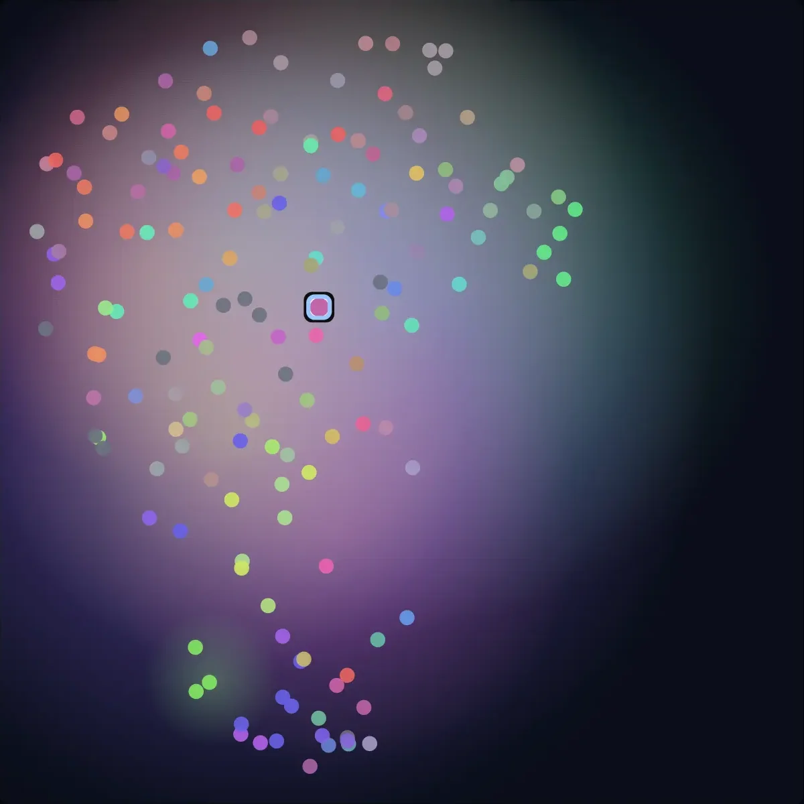

Papershop
Draw on paper, point, and speak. The physical desk is the editor.
Interacting with AI should feel like a breath of fresh air.
For over 30 years, the Tangible Media Group, led by Professor Hiroshi Ishii, has bridged the digital and physical worlds. The Working Group carries that work into the age of AI.
Simple controls bound to the meaning of what a model generates — a slider bound to “more poetic,” one puck per idea in a brainstorm. On screen or physical, the output changes as you move them. No submit button.
Draw on paper, point, and speak. The physical desk is the editor.

One puck per idea. Pull, push, flip, and turn.

All our complex lives all at once.

What if language models ran at 60 frames per second?
 Hiroshi IshiiFaculty Advisor
Hiroshi IshiiFaculty Advisor Sun ChuanqiResearch Lead
Sun ChuanqiResearch Lead Quincy KuangResearch Lead
Quincy KuangResearch Lead Lucy LiResearch Lead
Lucy LiResearch Lead Avril CuiUROP
Avril CuiUROP Shuji HosokawaUROP
Shuji HosokawaUROP Connie HuangUROP
Connie HuangUROP Sophia LoiselleUROP
Sophia LoiselleUROPRecruiting UROPs for IAP and Spring 2027. Bring something you can contribute and an appetite for learning the rest.
Read the UROP opening →